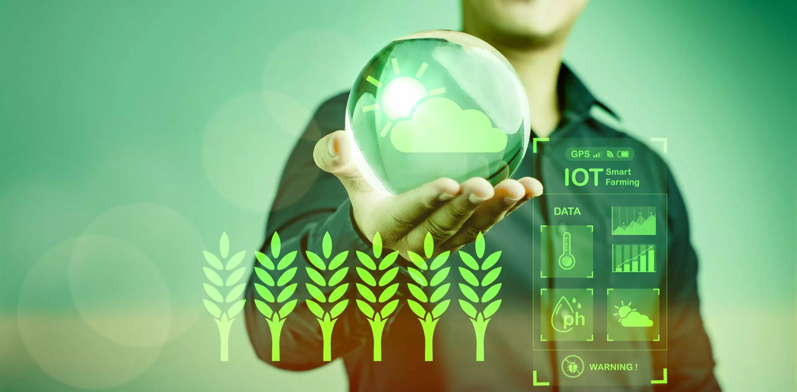
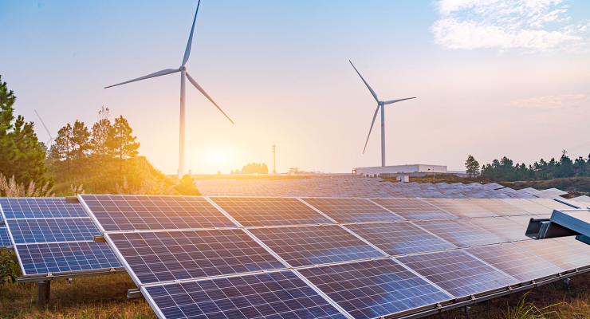

üå± O que √© Preserva√ß√£o Ambiental Digital?
A preservação ambiental digital é o conjunto de práticas sustentáveis relacionadas ao uso consciente da tecnologia para proteger o meio ambiente. Isso inclui desde a redução do consumo de recursos
físicos, como papel, até o uso de ferramentas digitais para monitorar ecossistemas, otimizar o uso de energia e promover uma cultura mais verde no mundo virtual.
A preservação do meio ambiente é hoje uma das maiores prioridades globais. Com os efeitos das mudanças climáticas se intensificando, torna-se urgente adotar soluções
que conciliem desenvolvimento e sustentabilidade. Nesse cenário, a tecnologia desponta como uma aliada estratégica, oferecendo ferramentas para transformar a forma como
cuidamos dos recursos naturais.
Ela envolve ações como a digitalização de documentos, o uso eficiente de servidores e data centers, a adoção de energias renováveis nos sistemas digitais, além do desenvolvimento de soluções tecnológicas
para reduzir a poluição, o desperdício e o impacto ambiental de nossas atividades online. É uma forma moderna e essencial de aliar inovação ao cuidado com o planeta.
Inovação digital a favor do meio ambiente
Nos últimos anos, tecnologias digitais vêm modernizando a gestão ambiental. Soluções inteligentes permitem um controle mais preciso e eficiente dos ecossistemas, promovendo
uma atuação mais transparente por parte de órgãos públicos e empresas privadas.
A digitalização, por exemplo, tem reduzido drasticamente o uso de papel. Um exemplo claro é o Sistema Eletrônico de Informações (SEI!) implementado em São Paulo, que
substituiu documentos impressos por versões digitais. Além de preservar árvores, a medida aumentou a agilidade nos processos administrativos.
Centralização de dados e eficiência na gestão ambiental
A unificação de informações em plataformas digitais facilita o controle de licenças, autorizações e sanções ambientais. Com dados acessíveis em tempo real, decisões podem
ser tomadas com mais rapidez e precisão, aumentando a eficácia do monitoramento e garantindo o cumprimento das leis.

Inteligência Artificial e automação como aliadas
Ferramentas como portais ambientais inteligentes, sistemas automatizados e inteligência artificial (IA) estão revolucionando a forma de agir diante dos desafios ecológicos.
Algoritmos de IA monitoram a fauna e a flora, preveem mudanças em habitats e identificam padrões de risco com mais rapidez e exatidão que métodos tradicionais.
IoT e Big Data no monitoramento ambiental
A Internet das Coisas (IoT) permite coletar dados ambientais com sensores interligados, que medem qualidade do ar, temperatura, umidade, entre outros indicadores. Já o uso
de Big Data e análise preditiva permite identificar tendências e antecipar problemas, como desastres naturais, poluição ou desequilíbrios ecológicos.
Agricultura sustentável e tecnologias no campo
No setor agrícola, a tecnologia também avança com o uso de drones, sensores e agricultura de precisão. Esses recursos reduzem desperdícios, melhoram a produtividade e
diminuem o impacto ambiental com controle mais assertivo do uso de água, fertilizantes e pesticidas.
Energias renováveis e novas formas de gerar eletricidade
Com o apoio da tecnologia, fontes limpas como energia solar, eólica e biomassa estão se tornando mais acessíveis e eficientes. Inovações em armazenamento e geração
energética promovem uma transição energética mais estável e menos dependente de combustíveis fósseis.

Digitalização no combate à poluição
O controle digital da poluição está se tornando uma realidade. Cidades inteligentes usam sensores conectados para rastrear níveis de poluentes e agir rapidamente
diante de anomalias. Indústrias também adotam sistemas para monitorar e reduzir emissões, aumentando a transparência e a responsabilidade ambiental.
Tecnologias que moldam políticas ambientais
O avanço tecnológico também está fortalecendo as políticas ambientais. Com acesso a dados em tempo real, governos elaboram leis mais eficazes e fiscalizam com mais
precisão. Ferramentas digitais também incentivam a participação popular na formulação de medidas sustentáveis.
Conclusão: tecnologia + meio ambiente = futuro sustentável
A união entre tecnologia e sustentabilidade representa um caminho promissor para proteger nosso planeta. A transformação digital não apenas torna a gestão ambiental
mais eficiente, como também promove maior responsabilidade, transparência e inovação.
Para alcançar um futuro verdadeiramente sustentável, é fundamental que governos, empresas e a sociedade integrem essas soluções tecnológicas com consciência ambiental,
garantindo que o progresso caminhe lado a lado com a preservação dos ecossistemas.